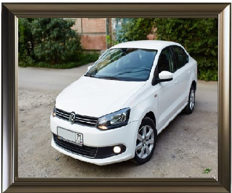

Как я провел это лето
- Мое лето прошло разнообразно. Все лето я занимался различными разными вещами и в это же время я отдыхал
- Первый месяц своего лета я проходил практику в фирме. Я набирался опыта в разных отралсях обслуживания компьютера и прочих системах.
- Так же во время практики, на выходных я поехал на озеро Селигер, что в 300км от Москвы. Там я провел незабываемые выходные плавая на лодке и ловя рыбу.

- Так же я ездил на своем жигуленке к ребятам, которые находились в походе на реке Волге, что в 250км от Москвы, и мы купались, ловили рыбу, загорали и конечно же катались на машине по лесам :)

- Ну и как все нормальные москвичи, я ездил к себе на дачу. Я там работал, помогал по участку, ну и конечно же как и все нормальные люди - отдыхал на природе

- За последние несколько недель августа я успел и отдохнуть, и устать от навала различной работы, и отдохнуть снова.

- Ну и под конец лета я решил съездить на обследование и, к огромному сожалению, заболел. Да настолько что меня положили в больницу.